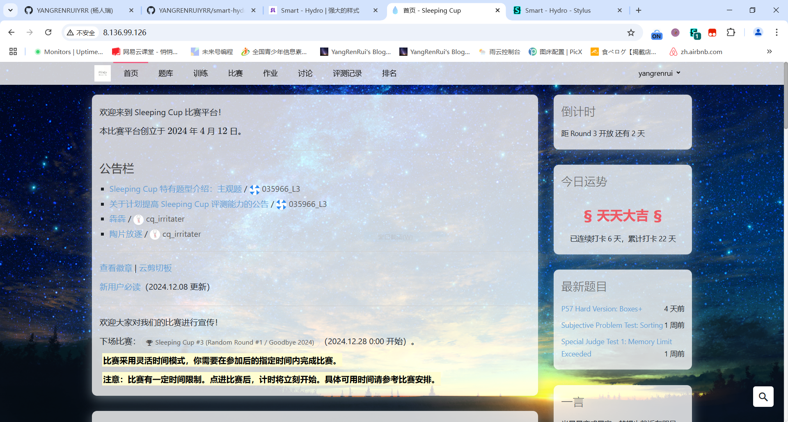

No.1 安装 Stylus/Stylish
Microsoft Edge
浏览器 > 扩展 > 管理扩展 > 开发人员模式
下载 Stylus crx文件
下载后有一个压缩包，解压后找到 crx 文件，直接拖到 浏览器 > 扩展 > 管理扩展 就行了。
Google chrome
与 Microsoft Edge 同理。
Fire fox
直接下载
No.2 安装 Smart - Hydro
打开
userstyles
点击 Install Style 即可